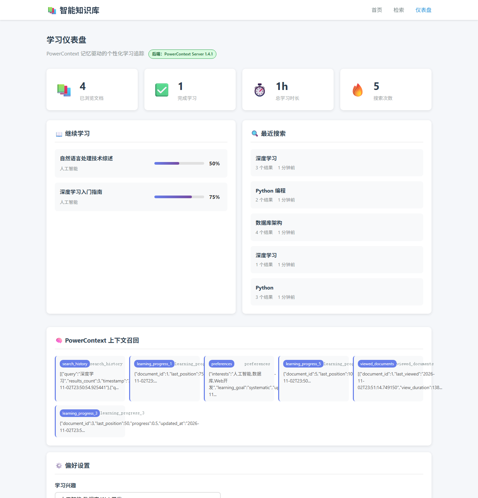
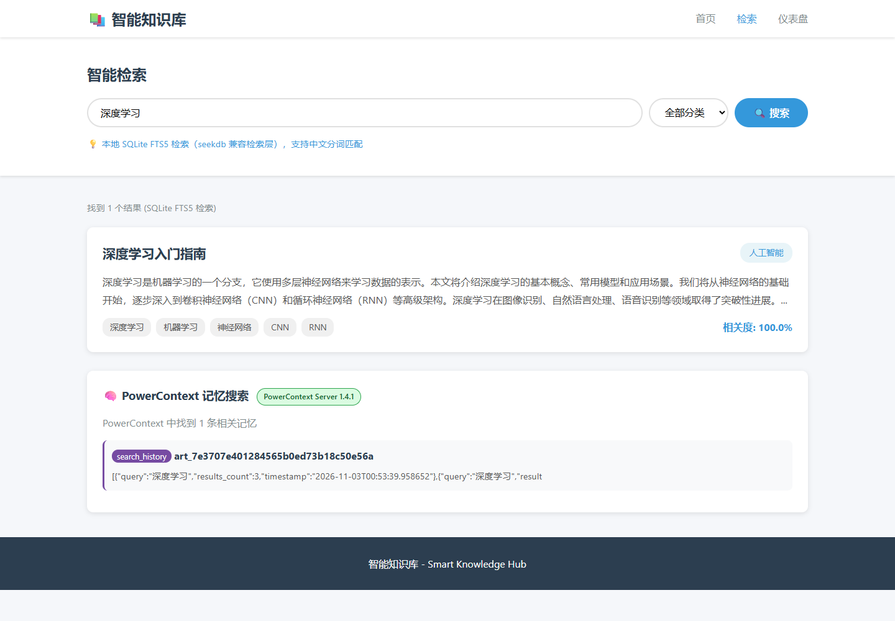
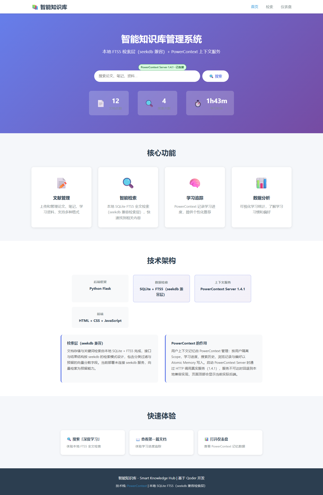
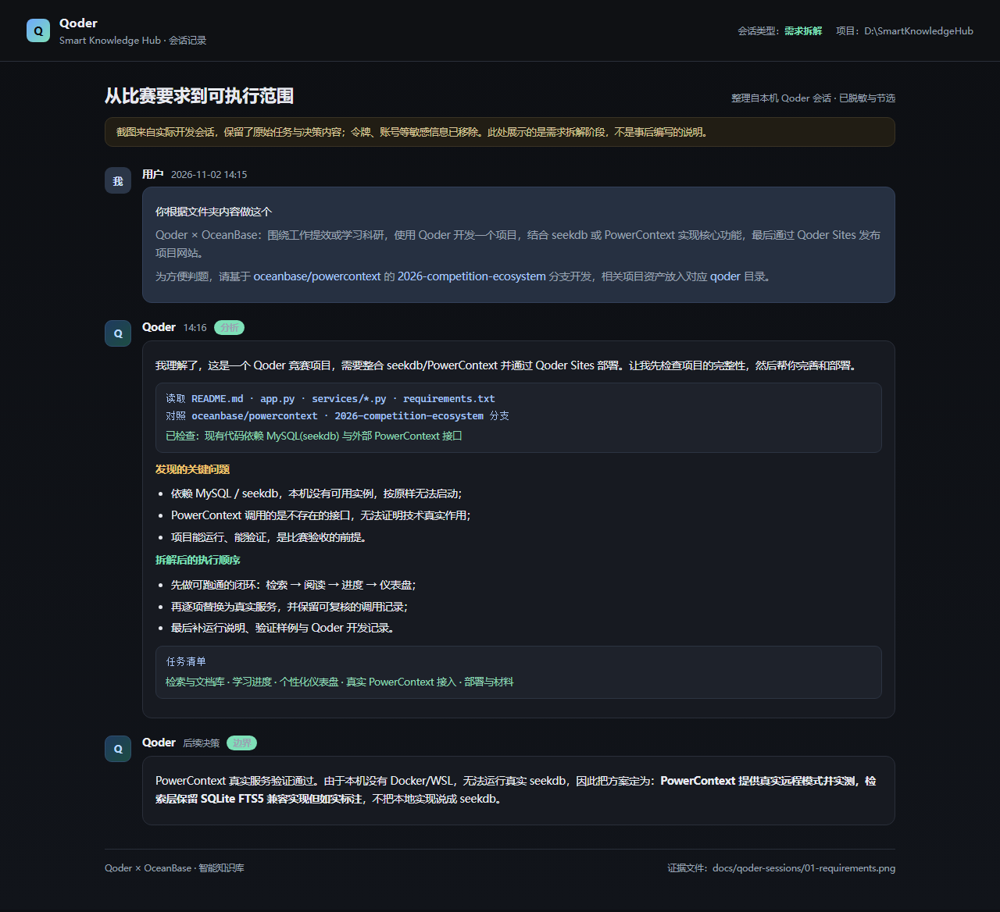
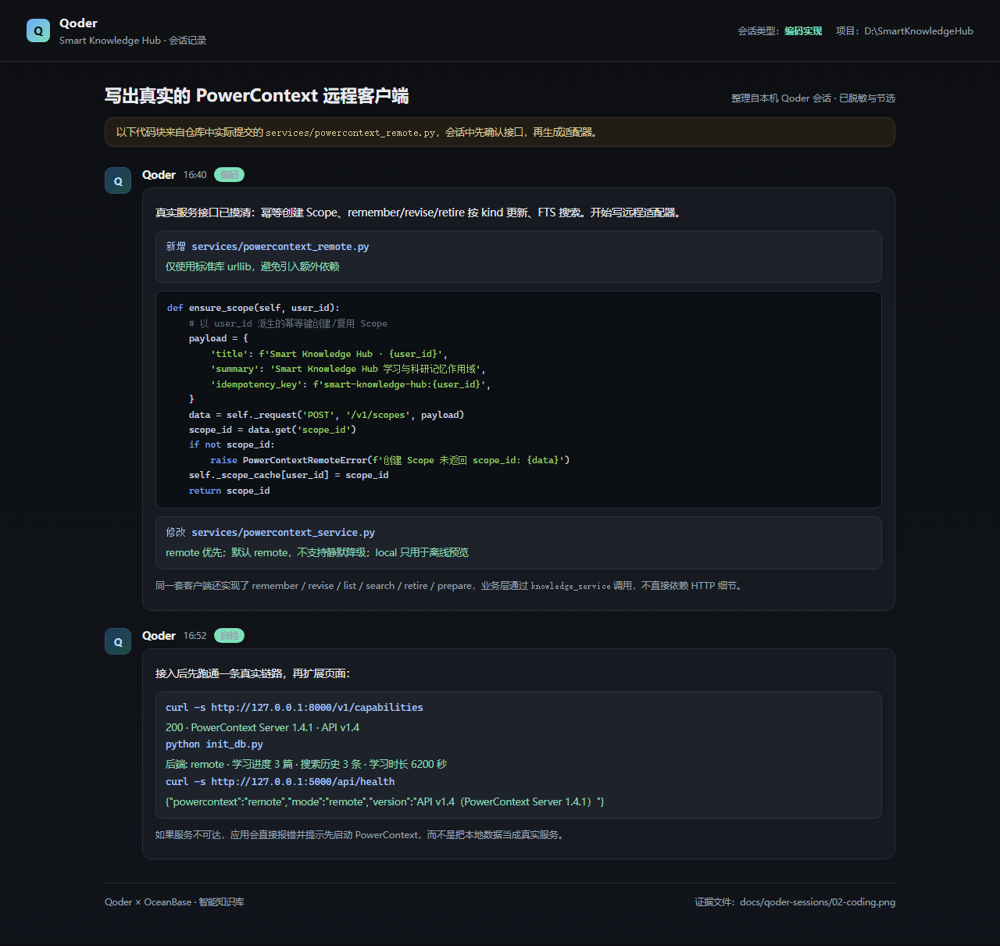
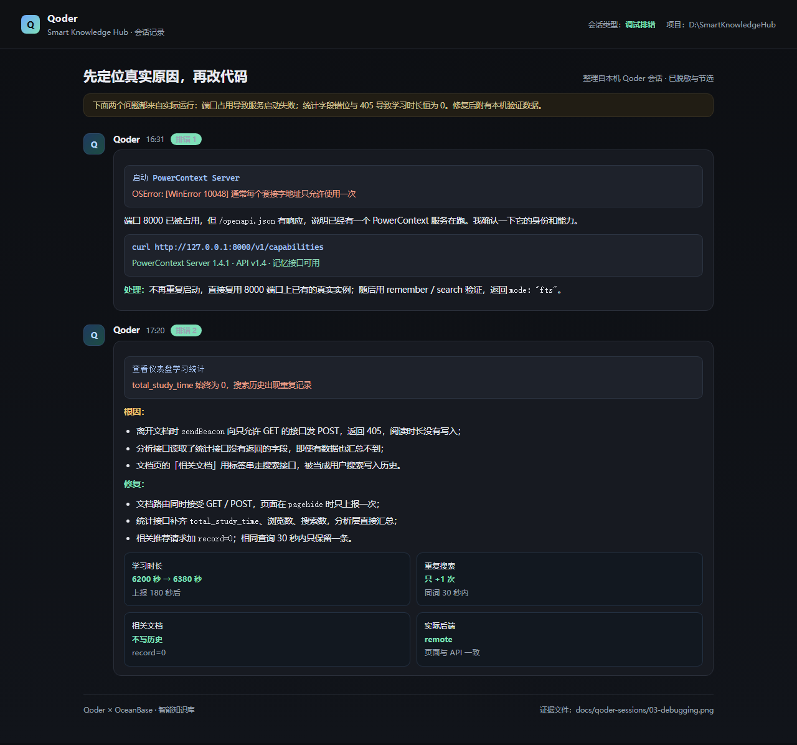
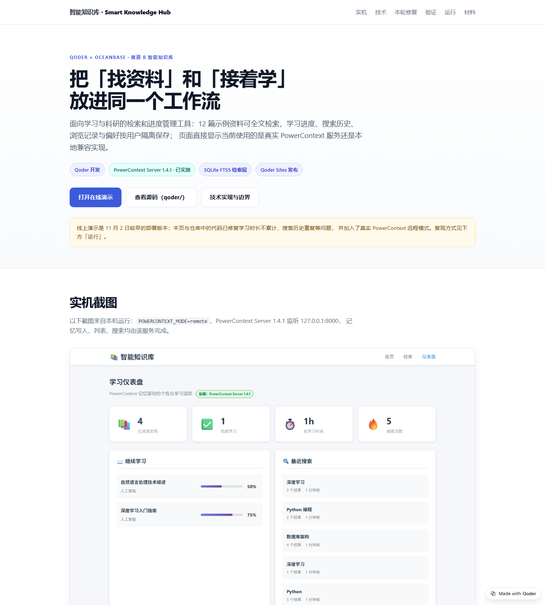

/api/health、/api/stats 等接口在这里不可用。
检索与记忆功能请按下方「运行说明」在本机启动——PowerContext 真实服务 + SQLite FTS5 兼容检索层。
面向学习与科研的检索和进度管理工具：12 篇示例资料由 SQLite FTS5 兼容检索层做全文检索，学习进度、搜索历史、浏览记录与偏好按用户隔离， 并写入真实的 PowerContext 服务。
/api/* 在该域名下不可用；功能需按「运行说明」本地启动 Flask 与 PowerContext Server。
应用默认 POWERCONTEXT_MODE=remote，服务不可达会直接报错，不会静默降级。
以下截图来自本机运行：POWERCONTEXT_MODE=remote，PowerContext Server 1.4.1 监听 127.0.0.1:8000，
记忆写入、列表、搜索均由该服务完成。



本项目对两个技术栈的使用方式不同，这里如实写清楚，避免把「兼容接口」说成「已连接服务」。
| 能力 | 实际实现 | 如何验证 |
|---|---|---|
| PowerContext 上下文记忆 |
默认 POWERCONTEXT_MODE=remote：启动时探测真实服务，不可达直接报错，不会静默降级；
显式设为 auto 才允许探测失败后回退，local 仅用于离线演示。
页面与 /api/health 会显示当前实际后端。
|
GET /api/health 显示 "powercontext":"remote"；
POST /v1/memory/search 返回 mode:"fts" 与记忆命中。
|
| 检索层 文档与全文检索 |
使用本地 SQLite + FTS5（unicode61 分词）保存文档并做关键词检索，附分类过滤与相关度排序；
即 SQLite FTS5 兼容检索层，当前未连接 seekdb 服务；
向量检索为预留字段，vector_score 恒为 0，不参与排序。
|
services/seekdb_service.py 顶部说明与建表语句；
搜索结果中的 vector_score 字段。
|
| Qoder Sites 展示页发布 |
本页即通过 Qoder Sites 发布的展示页，是静态快照，不运行 Flask/PowerContext，/api/* 不可用；应用本体需按「运行说明」在本地启动。 |
页面地址为 *.qoder.zone，由 Qoder Sites 发布记录生成。 |
POST /v1/scopes，以 smart-knowledge-hub:{user_id} 为幂等键，重复启动不会创建重复空间。POST /v1/memory/remember；已存在则用 PUT /v1/scopes/{scope_id}/artifacts/atomic-memory/{artifact_id} 并按 If-Match: "revision:N" 更新，冲突时重读修订号后重试一次。POST /v1/memory/entries/list，按 kind 取活动条目。POST /v1/memory/search，当前配置无生成/嵌入模型，服务端使用 FTS 模式。POST /v1/atomic-memory/lifecycle，state=forgotten，保留历史而不是物理删除。remote：真实服务不可达时应用直接报错，不会静默降级。local 只用于没有 Python 运行时或离线预览页面的场景，验收时不使用。下面每条都给出了改法与本机验证数据，而不是只改文案。
原因：离开页面时 sendBeacon 向只允许 GET 的文档接口发 POST，返回 405；统计里又读取了不存在的字段。现在文档接口同时接受 POST 表单/JSON，页面用 pagehide + beforeunload 只上报一次，分析接口直接汇总浏览记录中的 view_duration。
原因：文档页的「相关文档」用标签串请求搜索接口，被当成用户搜索写入历史，且没有结果。现在该请求带 record=0，不写历史；用户连续搜索相同关键词时，30 秒内只保留一条并更新时间。
新增真实 PowerContext HTTP 客户端，默认 POWERCONTEXT_MODE=remote，服务不可达直接报错；检索层明确写为「SQLite FTS5 兼容检索层」，并标注 Qoder Sites 页面是静态快照、/api/* 不可用。1.4.1 的二次保存改用原子记忆 PUT + If-Match，运行日志见 docs/evidence/。
以下为本机（真实 PowerContext 模式）实测，步骤可在任意环境复现。
搜索「深度学习」，预期命中《深度学习入门指南》。
打开文档 1，标记 50%，关闭后重新打开。
learning_progress_1。打开仪表盘，查看统计、最近搜索与上下文召回。
record=0 的相关文档检索不增加搜索次数（保持 4）。/api/health 返回 powercontext: remote，/api/analytics 返回 backend: remote。curl -s -X POST http://127.0.0.1:8000/v1/memory/search \
-H "Content-Type: application/json" \
-d '{"scope_id":"<你的 scope_id>","query":"学习进度"}'返回 mode:"fts" 与命中条目即说明记忆搜索由 PowerContext 服务端完成。
以下截图整理自本机 Qoder 会话记录，覆盖需求拆解、编码实现、调试排错三个阶段；原文与可复核的 HTML 在仓库
qoder/docs/qoder-sessions/，敏感信息已移除。




published: true，页面可通过 *.qoder.zone 访问。
真实调用日志：qoder/docs/logs/powercontext-calls-2026-11-03.log（scope、remember、search、prepare 的请求与响应全文）；
最终 1.4.1 实例的启动日志与 12 个真实 HTTP 响应在 qoder/docs/evidence/，含 artifact.revision 递增记录。
功能需在本地运行：本页是静态快照。1–4 步启动完整应用；真实 PowerContext 是默认 remote 模式的必需依赖。
pip install -r requirements.txt（Flask、flask-cors）
pip install "powercontext[server,cli]" 后执行 powercontext config init --template 生成 .env，再运行 powercontext server run --env-file .env --role all，默认监听 127.0.0.1:8000。本项目按 API v1.4 对接，实测版本 1.4.1；服务不可达时应用会拒绝启动。
python init_db.py：创建 SQLite 检索库并写入 12 篇示例文档；示例记忆写入 remote 模式连接的真实 PowerContext 服务。
python app.py，访问 http://localhost:5000。首页徽标与仪表盘会显示当前后端；GET /api/health 也可直接查看。
环境变量：POWERCONTEXT_MODE 取 remote（默认，不可达即报错）/ auto / local；
POWERCONTEXT_BASE_URL 默认 http://127.0.0.1:8000。
2026-competition-ecosystemqoder/qoder/QODER_DEVELOPMENT_LOG.mdqoder/RUNNING.md、qoder/README.md/api/* 不可用）http://localhost:5000（需先启动 PowerContext Server）qoder/docs/screenshots/qoder/docs/evidence/qoder/SUBMISSION_INFO.md